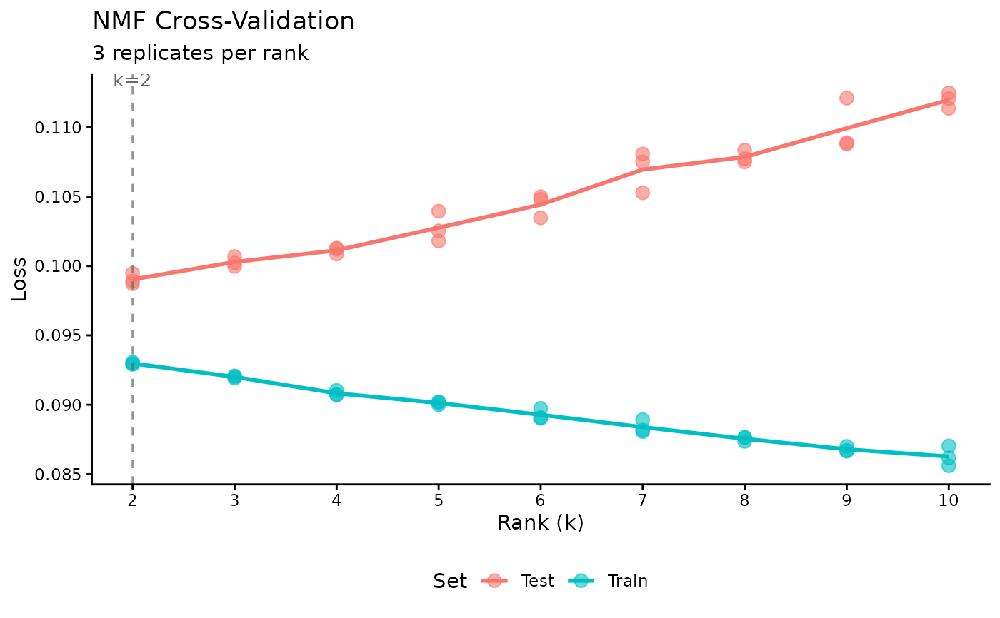

High-performance NMF of the form \(A = wdh\) for large dense or sparse matrices. Supports single-rank fitting or cross-validation across multiple ranks. Returns an nmf object or nmfCrossValidate data.frame.
Usage
nmf(
data,
k,
tol = 1e-04,
maxit = 100,
L1 = c(0, 0),
L2 = c(0, 0),
L21 = c(0, 0),
angular = c(0, 0),
seed = NULL,
mask = NULL,
loss = c("mse", "mae", "huber", "gp", "nb", "gamma", "inverse_gaussian", "tweedie"),
huber_delta = 1,
dispersion = c("per_row", "per_col", "global", "none"),
theta_init = 0.1,
theta_max = 5,
zi = c("none", "row", "col", "twoway"),
zi_em_iters = 1L,
theta_min = 0,
nb_size_init = 10,
nb_size_max = 1e+06,
nb_size_min = 0.01,
gamma_phi_init = 1,
gamma_phi_max = 10000,
gamma_phi_min = 1e-06,
tweedie_power = 1.5,
graph_W = NULL,
graph_H = NULL,
graph_lambda = c(0, 0),
guides = NULL,
sort_model = TRUE,
mask_zeros = FALSE,
nonneg = c(TRUE, TRUE),
upper_bound = c(0, 0),
test_fraction = 0,
patience = 5,
cv_k_range = c(2, 50),
cv_seed = NULL,
track_train_loss = TRUE,
threads = 0,
verbose = FALSE,
cd_tol = 1e-08,
cd_maxit = 100L,
cd_abs_tol = 1e-15,
norm = c("L1", "L2", "none"),
streaming = "auto",
panel_cols = 0L,
resource = "auto",
projective = FALSE,
symmetric = FALSE,
solver = c("auto", "cholesky", "cd"),
init = c("random", "lanczos", "irlba"),
irls_max_iter = 5L,
irls_tol = 1e-04,
robust = FALSE,
distribution = NULL,
zero_inflation = NULL,
distribution_config = list(),
zi_config = list(),
robust_config = list(),
on_iteration = NULL,
h_init = NULL,
profile = FALSE,
dispatch = NULL,
...
)Arguments
- data
dense or sparse matrix of features in rows and samples in columns. Prefer
matrixorMatrix::dgCMatrix, respectively. Also accepts a file path (character string) which will be auto-loaded based on extension.- k
rank (integer), vector of ranks for cross-validation, or "auto" for automatic rank determination.
- tol
tolerance of the fit (default 1e-4)
- maxit
maximum number of fitting iterations (default 100)
- L1
LASSO penalties in the range (0, 1], single value or array of length two for
c(w, h)- L2
Ridge penalties greater than zero, single value or array of length two for
c(w, h)- L21
Group sparsity (L2,1-norm) penalties, single value or array of length two for
c(w, h)- angular
Angular regularization penalties, single value or array of length two for
c(w, h)(default c(0, 0)).- seed
random seed(s) for initialization and CV. Can be:
NULLfor random initialization, a single integer for reproducible initialization, a vector of integers for multiple CV replicates, or a custom W matrix (k x p) for custom initialization.- mask
dense or sparse matrix of values in
datato handle as missing. Alternatively, specify "zeros" or "NA".- loss
loss function:
"mse"(default),"mae","huber","gp", or"nb". Useloss="gp"withdispersion="none"for KL divergence (Poisson). Useloss="nb"for Negative Binomial (quadratic variance-mean, standard for scRNA-seq).- huber_delta
delta parameter for Huber loss (default 1.0).
- dispersion
dispersion mode for Generalized Poisson loss:
"per_row"(default, per-feature dispersion),"global"(single shared dispersion), or"none"(no dispersion estimation; theta=0 reduces GP to Poisson/KL divergence).- theta_init
initial theta value for GP dispersion (default 0.1).
- theta_max
maximum allowed theta value (default 5.0). Caps dispersion to prevent instability.
- zi
zero-inflation mode for ZIGP/ZINB:
"none"(default),"row"(per-row dropout),"col"(per-column dropout), or"twoway"(row+column combined). Requiresloss="gp"orloss="nb". Estimates structural dropout probabilities pi separately from count model. Currently CPU-only; not yet supported in cross-validation mode.- zi_em_iters
number of EM iterations per NMF iteration for the zero-inflation E-step and M-step (default 1). More iterations give more accurate pi estimates per NMF step.
- theta_min
minimum theta floor (default 0). Set > 0 to prevent theta collapse to zero.
- nb_size_init
initial NB size (r) parameter for Negative Binomial dispersion (default 10.0).
- nb_size_max
maximum allowed NB size (default 1e6).
- nb_size_min
minimum allowed NB size (default 0.01).
- gamma_phi_init
initial dispersion parameter for Gamma/Inverse Gaussian (default 1.0).
- gamma_phi_max
maximum allowed Gamma/IG dispersion (default 1e4).
- gamma_phi_min
minimum allowed Gamma/IG dispersion (default 1e-6).
- tweedie_power
variance power parameter for Tweedie distribution (default 1.5). V(mu) = mu^p. Special cases: p=0 Gaussian, p=1 Poisson, p=2 Gamma, p=3 Inverse Gaussian. Can also be set via
distribution_config$tweedie_power.- graph_W
sparse graph Laplacian or weighted adjacency matrix (dgCMatrix, m x m) for feature (row) graph regularization. Must be square and symmetric. Pass the graph Laplacian \(L = D - A\) (recommended) or a raw adjacency matrix; RcppML converts to Laplacian internally. Controls similarity constraints on W rows.
- graph_H
sparse graph Laplacian or weighted adjacency matrix (dgCMatrix, n x n) for sample (column) graph regularization. Must be square and symmetric. Controls similarity constraints on H columns.
- graph_lambda
regularization strength for graph Laplacian term, single value (applied to both W and H graphs) or
c(lambda_W, lambda_H)(defaultc(0, 0)). Larger values enforce stronger similarity within connected nodes.- guides
reserved for future guided/semi-supervised NMF features.
- sort_model
if
TRUE(default), sort factors by descending diagonal values.- mask_zeros
if
TRUE, treat all zero entries as missing (defaultFALSE).- nonneg
logical vector of length 2 for
c(w, h)specifying non-negativity constraints (defaultc(TRUE, TRUE)).- upper_bound
upper bound constraints for factor values, single value or c(w_bound, h_bound) (default c(0, 0) = no bound).
- test_fraction
fraction of entries to hold out for cross-validation (default 0 = disabled).
- patience
early stopping patience for cross-validation (default 5).
- cv_k_range
rank range for automatic rank search, c(min, max) (default c(2, 50)).
- cv_seed
seed(s) for CV holdout pattern.
- track_train_loss
if
TRUE(default), track training loss history during cross-validation.- threads
number of threads for OpenMP parallelization (default 0 = all available)
- verbose
print progress information during fitting (default FALSE)
- cd_tol
relative convergence tolerance for coordinate descent NNLS solver (default 1e-8).
- cd_maxit
maximum number of coordinate descent iterations in the NNLS solver (default 100). Acts as a safety cap; with adaptive CD probing, the effective iteration count is determined automatically from a sample of columns (typically 3-10 with warm starts).
- cd_abs_tol
absolute convergence tolerance for coordinate descent (default 1e-15).
- norm
normalization type for the scaling diagonal:
"L1"(default),"L2", or"none". Controls how W and H factors are normalized at each iteration and in the final result.- streaming
streaming mode for large matrices:
"auto",TRUE, orFALSE.- panel_cols
number of columns per streaming panel (default 0 = auto-detect).
- resource
compute resource override:
"auto"(default) auto-detects available resources,"cpu"forces CPU,"gpu"forces GPU. Can also be set via theRCPPML_RESOURCEenvironment variable (param takes priority over env var).- projective
if
TRUE, use projective NMF where \(H = diag(d) \cdot W^T \cdot A\) instead of solving for H independently (defaultFALSE). This constrains the approximation to the column space of W, yielding parts-based representations with automatic sparsity in the coefficient matrix.- symmetric
if
TRUE, use symmetric NMF where \(H = W^T\), factorizing \(A \approx W \cdot d \cdot W^T\) (defaultFALSE). Appropriate for symmetric matrices such as covariance, correlation, or similarity matrices. Only W is solved for; H is set equal to the transpose of W. Data should be a square symmetric matrix.- solver
NNLS solver for the alternating least squares subproblem:
"auto"(default) selects the best solver for the given rank and hardware — CD for k <= 32 on GPU, Cholesky otherwise."cholesky"(Cholesky factorization + non-negativity clip, fastest for high ranks),"cd"(coordinate descent, exact non-negativity enforcement, best quality at low ranks).- init
initialization method:
"random"(default, uniform random),"lanczos"(Lanczos SVD seed with \(W = |U| \sqrt{\Sigma}\), \(H = |V| \sqrt{\Sigma}\); typically reduces iteration count by 30-50\ (Implicitly Restarted Lanczos Bidiagonalization; alternative to Lanczos for high ranks k >= 32). SVD-based methods (lanczos/irlba) provide better initialization quality but add overhead; use when initialization quality is more important than speed.- irls_max_iter
maximum IRLS iterations for robust losses (default 20).
- irls_tol
convergence tolerance for IRLS weights (default 1e-4).
- robust
robustness control.
FALSE(default) for no robustness.TRUEfor Huber-type robustness with delta=1.345 (95\ A positive numeric value sets a custom Huber delta. Works with any distribution: IRLS weights are decomposed into distribution_weight * robust_huber_modifier.- distribution
new unified distribution API. One of:
"auto"(selects via score test on a quick baseline fit),"gaussian"(MSE),"poisson"(GP with dispersion=none),"gp"(Generalized Poisson),"nb"(Negative Binomial),"gamma"(Gamma),"inverse_gaussian"(Inverse Gaussian), or"tweedie"(Tweedie with continuous variance power V(mu) = mu^p; set p viatweedie_powerordistribution_config$tweedie_power). When specified, takes precedence over thelossparameter. Usedistribution_configto set distribution-specific tuning parameters.- zero_inflation
zero-inflation mode (new API):
"none","row","col","twoway", or"auto". Equivalent to theziparameter but preferred in the new API. Usezi_configfor additional tuning.- distribution_config
named list of distribution-specific overrides. Supported keys:
dispersion(dispersion mode),theta_init/theta_max/theta_min(GP theta),nb_size_init/nb_size_max/nb_size_min(NB size r),gamma_phi_init/gamma_phi_max/gamma_phi_min(Gamma/IG dispersion phi).- zi_config
named list of zero-inflation overrides. Supported keys:
em_iters(number of EM iterations per NMF step).- robust_config
named list of robustness overrides. Supported keys:
delta(Huber delta),irls_max_iter,irls_tol.- on_iteration
optional callback function called after each NMF iteration. Receives iteration number and current loss. Return
FALSEto stop early.- h_init
optional initial H matrix (k x n) for custom initialization. When provided alongside a custom W via
seed, both factors are initialized from user-supplied values. DefaultNULL(auto-init).- profile
if
TRUE, enable per-iteration timing profiling. Results stored inmisc$profileof the returned object. DefaultFALSE.- dispatch
StreamPress dispatch mode for .spz file input.
NULL(default) or"auto"for automatic dispatch based on available RAM; a string like"inmemory","chunked", or"streaming"to override.- ...
additional development parameters
Value
When k is a single integer: an S4 object of class nmf with slots:
wfeature factor matrix,
m x kdscaling diagonal vector of length
k(descending order after sorting)hsample factor matrix,
k x nmisclist containing
tol(final tolerance),iter(iteration count),loss(final loss value),loss_type(loss function used), andruntime(seconds). Cross-validation models also includetest_mask,test_loss,train_loss.
When k is a vector: a data.frame of class nmfCrossValidate with columns
k, rep, train_loss, test_loss, and best_iter.
Details
This fast NMF implementation decomposes a matrix \(A\) into lower-rank non-negative matrices \(w\) and \(h\), with columns of \(w\) and rows of \(h\) scaled to sum to 1 via multiplication by a diagonal, \(d\): $$A = wdh$$
The scaling diagonal ensures convex L1 regularization, consistent factor scalings regardless of random initialization, and model symmetry in factorizations of symmetric matrices.
The factorization model is randomly initialized. \(w\) and \(h\) are updated by alternating least squares.
RcppML achieves high performance using the Eigen C++ linear algebra library, OpenMP parallelization, a dedicated Rcpp sparse matrix class, and fast sequential coordinate descent non-negative least squares initialized by Cholesky least squares solutions.
Sparse optimization is automatically applied if the input matrix A is a sparse matrix (i.e. Matrix::dgCMatrix). There are also specialized back-ends for symmetric, rank-1, and rank-2 factorizations.
L1 penalization can be used for increasing the sparsity of factors and assisting interpretability. Penalty values should range from 0 to 1, where 1 gives complete sparsity.
Set options(RcppML.verbose = TRUE) to print model tolerances to the console after each iteration.
Parallelization is applied with OpenMP using the number of threads in getOption("RcppML.threads") and set by option(RcppML.threads = 0), for example. 0 corresponds to all threads, let OpenMP decide.
Cross-Validation
When k is a vector, the function performs cross-validation to find the optimal rank:
A fraction (
test_fraction) of entries are held out for validationModels are fit for each rank in
kusing only training dataTest loss is computed on held-out entries
Returns a data.frame with k, rep, train_mse, test_mse, and best_iter for each rank/replicate
Use
plot()on the result to visualize loss vs rank
Loss Functions
The loss parameter controls the objective function:
"mse": Mean Squared Error (default). Standard Frobenius norm minimization."mae": Mean Absolute Error. More robust to outliers than MSE."huber": Huber loss. Quadratic for small errors, linear for large errors. Controlled byhuber_deltaparameter."gp": Generalized Poisson. For overdispersed count data (e.g., scRNA-seq). Usedispersionto control per-row or global overdispersion estimation. Withdispersion="none", equivalent to KL divergence (Poisson model)."nb": Negative Binomial. Quadratic variance-mean relationship. Standard for scRNA-seq data with overdispersion. Size parameter (r) estimated per-row or globally."gamma": Gamma distribution. Variance proportional to mu^2. For positive continuous data. Dispersion (phi) estimated via MoM Pearson estimator."inverse_gaussian": Inverse Gaussian. Variance proportional to mu^3. For positive continuous data with heavy right tails."tweedie": Tweedie distribution. Variance proportional to mu^p where p is set viatweedie_power(default 1.5). Interpolates between Poisson (p=1), Gamma (p=2), and Inverse Gaussian (p=3).
Non-MSE losses use Iteratively Reweighted Least Squares (IRLS) which may be slower but provides robustness to outliers (MAE, Huber) or better fits for count data (GP, NB) and positive continuous data (Gamma, Inverse Gaussian).
Alternatively, use the distribution parameter for the new unified API, which
maps distribution names to loss functions and provides distribution_config
for fine-grained tuning.
L21 (Group Sparsity) Regularization
L21-norm regularization (also known as group LASSO) encourages entire rows of W or columns of H to become zero.
Graph Regularization
Graph Laplacian regularization encourages connected nodes in a graph to have similar factor representations.
Compute Resources (CPU vs GPU)
By default (resource = "auto"), RcppML auto-detects available hardware.
All features are fully supported on CPU (the default backend):
Standard NMF (sparse and dense)
Cross-validation NMF
All loss functions (MSE, MAE, Huber, KL)
All regularization types (L1, L2, L21, angular, graph)
Upper bound constraints
OpenMP multi-threading
GPU acceleration (when compiled with CUDA support) accelerates:
Sparse NMF (standard mode)
Dense NMF (standard mode)
GPU is experimental and falls back to CPU automatically if unavailable.
Use resource = "gpu" to force GPU, resource = "cpu" to force CPU.
Set verbose = TRUE to see which backend is selected.
Unsupported Combinations
Not all parameter combinations are currently supported. The following will produce an error or unexpected results:
- Cholesky + non-MSE loss
The Cholesky solver (
solver="cholesky") does not support IRLS-based losses (GP, NB, Gamma, Inverse Gaussian, Tweedie). Usesolver="cd"orsolver="auto"(default) for non-MSE losses.- Zero-inflation with non-GP/NB losses
Zero-inflation (
ziorzero_inflation) is only supported withloss="gp"andloss="nb". Using ZI with MSE, Gamma, Inverse Gaussian, or Tweedie is unsupported and will produce incorrect results.- Zero-inflation "twoway" mode
The
zi="twoway"mode is currently broken on all backends. Usezi="row"orzi="col"instead.- MAE and Huber losses
The
"mae"and"huber"loss functions are deprecated. Use therobustparameter with any distribution instead (e.g.,robust=TRUEwithdistribution="gaussian").- GPU + dense CV
GPU cross-validation with dense matrices falls back to CPU via sparseView conversion. Native GPU dense CV is not yet implemented.
- GPU + projective/symmetric CV
Cross-validation with
projective=TRUEorsymmetric=TRUEfalls back to CPU on GPU builds.
Methods
S4 methods available for the nmf class:
predict: project an NMF model (or partial model) onto new samplesevaluate: calculate mean squared error loss of an NMF modelsummary:data.framegivingfractional,total, ormeanrepresentation of factors in samples or features grouped by some criteriaalign: find an ordering of factors in onenmfmodel that best matches those in anothernmfmodelprod: compute the dense approximation of input datasparsity: compute the sparsity of each factor in \(w\) and \(h\)subset: subset, reorder, select, or extract factors (same as[)generics such as
dim,dimnames,t,show,head
References
DeBruine, ZJ, Melcher, K, and Triche, TJ. (2021). "High-performance non-negative matrix factorization for large single-cell data." BioRXiv.
Examples
# \donttest{
# basic NMF
model <- nmf(Matrix::rsparsematrix(1000, 100, 0.1), k = 10)
# cross-validation to find optimal rank
library(Matrix)
A <- rsparsematrix(500, 100, 0.1)
cv_results <- nmf(A, k = 2:10, cv_seed = 1:3, test_fraction = 0.1)
plot(cv_results)

optimal_k <- cv_results$k[which.min(cv_results$test_mse)]
# fit final model with optimal rank
model <- nmf(A, optimal_k)
# }